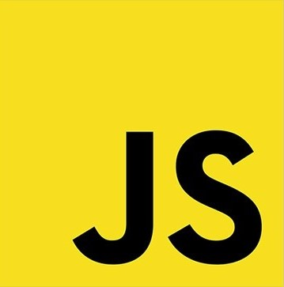
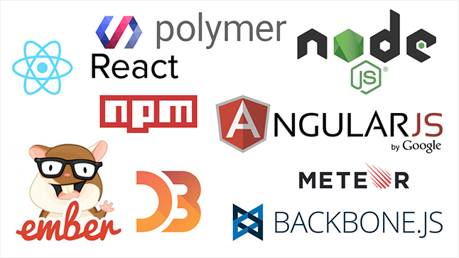
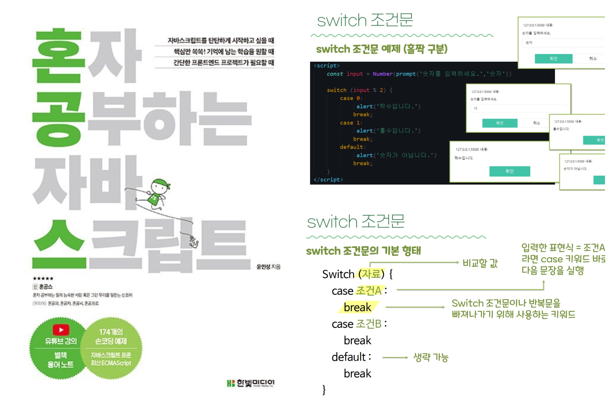

Knowldege - JavaScript

Java Script란?
Java Script(자바스크립트)는 웹 브라우저에서 사용하는 프로그래밍 언어입니다! 우리가 매일 접속하는 웹사이트는 크게 3가지 요소로 구성되어 있는데요. ‘HTML(Hyper Text Markup Language)’,
‘CSS(Cascading Style Sheets)’, ‘자바스크립트(Javascript)’입니다. HTML은 웹페이지의 큰 뼈대
를 제공하고, CSS는 색깔이나 글씨체와 같은 디자인 요소를 관리합니다. 자바스크립트는 크로스 플
랫폼(cross platform), 객체지향 스크립트 언어로 웹페이지의 동작을 담당합니다. 예를 들어 자바
스크립트를 이용하면 ‘버튼을 클릭하면 밑에 날짜를 보여줘’라는 식의 명령을 내릴 수 있습니다. 제
홈의 퀴즈 역시 자바스크립트를 이용한 것입니다! 자바스크립트를 이용하면 웹에 풍부한 효과를 넣
을 수 있지만, 2000년대 초반만 해도 자바스크립트는 개발자들에게 무시당하는 언어였다고 합니
다. 별다른 기능도 없고, 성능도 별로 좋지 않았기 때문입니다. 하지만 최근 몇 년 사이에 다양한 자
바스크립트 프레임워크와 라이브러리가 생기면서 자바스크립트 생태계는 크게 확장되고 있으며,
그 위상도 점점 높아지고 있습니다!
프로그래밍 입문자들은 자바스크립트와 자바(Java)가 서로 비슷한 기술이라고 생각하곤 합니다.
저도 이 둘이 다르다는 걸 알게 된 지 얼마 안 됐는데요.. 그 이유는 두 언어 모두 자바라는 단어를
사용하기 때문입니다. 하지만 자바스크립트는 자바와는 전혀 관계가 없습니다. 언어를 만든 사람부
터 기능과 사용법까지 완전히 다르다고 합니다. 자바스크립트는 브랜든 아이크(Brendan Eich)가
개발했습니다. 브랜든 아이크는 1995년 넷스케이프에 근무하면서 자바스크립트 개념을 만들었습
니다. 그는 처음에는 자바스크립트가 아닌 ‘모카(Mocha)’라는 이름을 붙였습니다. 모카는 1995년
12월 ‘라이브 스크립트(LiveScript)’라는 이름으로 바뀌었는데, 당시 자바가 큰 인기를 끌자 마케팅
효과를 노려 이름을 자바스크립트로 변경했습니다. 이후 자바스크립트 기술이 다양하게 발전했고,
이에 대한 표준과 명세를 ECMA 인터내셔널에서 관리하고 있습니다.
| JavaScript | Java |
|---|---|
| 객체 지향. 객체의 형 간에 차이 없음. 프로토타입 매커니즘을 통한 상속, 그리고 속성과 메서드는 어떤 객체든 동적으로 추가될 수 있음. | 클래스 기반. 객체는 클래스 계층 구조를 통한 모든 상속과 함께 클래스와 인스턴스로 나뉨. 클래스와 인스턴스는 동적으로 추가된 속성이나 메소드를 가질 수 없음. |
| 변수 자료형이 선언되지 않음. | 변수 자료형은 반드시 선언되어야 함. |
| 하드 디스크에 자동으로 작성 불가. | 하드 디스크에 자동으로 작성 가능. |

자바스크립트는 다양한 장점과 단점을 가집니다. 먼저 장점부터 살펴보자면, 자바스크립트는 컴파일
과정이 없기 때문에 다른 언어와 비교했을 때 빠른 시간 안에 스크립트 코드를 작성할 수 있게 도와
줍니다! 기존 C나 자바 언어와 달리 굉장히 단순한 구조와 원칙을 가지고 있기 때문에 초보 개발자들
이 쉽게 배우고 이해할 수 있습니다. 이러한 특징은 개발자마다 서로 다른 방식으로 코드를 짜는 부
작용도 있습니다. 그래서 구글이나 에어비앤비 같은 기업들은 ‘자바스크립트 스타일 가이드’라는 문
서를 따로 만들어 읽기 쉽고 실수를 피할 수 있는 자바스크립트 작성법을 공개하기도 했답니다. 자바
스크립트는 웹에 특화된 기술이기 때문에 운영체제나 플랫폼에 상관없이 잘 작동되고 확장성도 높습
니다. 단점은 성능이나 보안 측면인데요. 일단 내부에서 제공되는 기능이 제한적이고, 관련된 개발도
구도 적은 편입니다. 또한 자바스크립트는 HTML 소스코드에 함께 작성되면서 소스코드가 외부로 공
개되는데, 이 과정에서 보안 취약점이 발생할 수 있습니다.
특히 최근에는 자바스크립트 관련 라이브러리나 프레임워크가 개발자들 사이에서 큰 화제라고 합
니다. 위키피디아에 올라온 ‘자바스크립트 라이브러리 목록’을 보면 관련된 기술이 90여개인데다
가 데이터과학, 이용자조작화면(UI), 서버 등 활용 분야도 다양합니다. 위 사진은 최근 큰 인기를 끄
는 자바스크립트 기술들입니다!
저는 여름방학 때 JavaScript 스터디를 한 적이 있습니다! 오른쪽 사진의 '혼자 공부하는 자바스크
립트' 책으로 학우님들과 함께 공부했었습니다. 강의를 듣는 것이 아닌 책으로 다같이 공부하는 방
식이다 보니 어렵기도 했지만, 새로운 경험이었고 유익한 지식을 얻은 스터디여서 다시 돌아간다
해도 또 할 것 같습니다. ㅎㅎ 발표 직전에 정말 너무 긴장돼서 덜덜 떨었던 기억이 아직도 생생하
네요... ㅠㅠ
